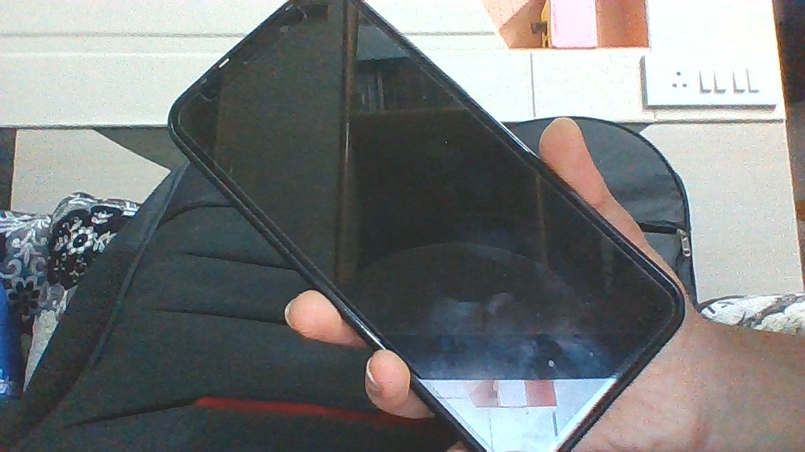

Test Image - 
Output on Wolfram Project -
Phone
Output on MobileNet -
Cell Phone
Result - MobileNet is more acurate.
Test Image -
Output on Wolfram Project -
Stop watch
Output on MobileNet -
combination lock
Result - Microft azure is more acurate
Test Image -
Output on Wolfram Project -
comic book
Output on MobileNet -
story book
Result - MobilNetis more acurate
Test Image -
Output on Wolfram Project -
pencil box
Output on MobileNet -
pencil case
Result - MobileNet is more acurate